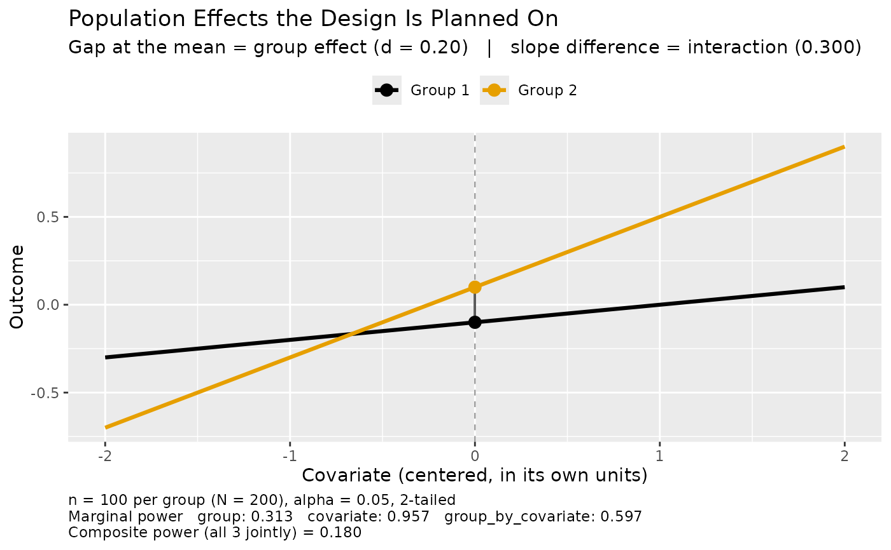

Sample Size or Composite Power for a Two-Group ANCOVA With a Covariate
Source:R/ss_power_composite_ancova_2group.R
ss_power_composite_ancova_2group.RdDetermine the necessary per-group sample size to achieve a desired level of
composite statistical power in a two-group analysis of covariance, or, given a
per-group sample size, return the realized composite power. Composite power is
the probability that every effect named in composite_terms is
statistically significant in the same study, which is the quantity a design
has to be planned against when its conclusion requires more than one result to
hold at once.
Arguments
- smd
Supposed standardized mean difference (Cohen's d) between the two groups at the mean of the covariate, standardized by
sigma: a value the researcher posits for the population, either a minimally important effect or a value believed to be true, never a sample estimate. Defaults to 0, which is no group effect and therefore power equal toalpha_levelfor that test.- rho
Supposed within-group population correlation between the covariate and the outcome. Length 1 for the same correlation in both groups, in which case the two slopes are equal and the interaction is zero, or length 2 for one correlation per group, in which case the slopes differ and the interaction carries the difference. Each element must lie in (-1, 1). Defaults to 0.
- sigma
Within-group population standard deviation of the outcome: the same \(\sigma\) as in a one-way ANOVA on the outcome, the same in both groups, and the standardizer of
smd. Defaults to 1, which putssmdand the coefficients on a standardized scale.- sd_cov
Population standard deviation of the covariate. Defaults to 1. A correlation is scale free, so
sd_covdoes not affect power; it sets the units the slopes and the figure are expressed in.- composite_terms
Character vector naming the effects that must all be statistically significant. Any subset of
"group","covariate", and"group_by_covariate". A single term returns that test's ordinary power. Defaults to all three.- include_interaction
Logical: whether the fitted model contains the group by covariate interaction. Defaults to
TRUE. Dropping it returns one residual degree of freedom.- desired_power
Desired composite statistical power (default 0.85). Used only when
nisNULL.- alpha_level
Type I error rate for each individual test (default 0.05). This is the per-test rate, not a rate for the composite event.
- n
Per-group sample size (assumed balanced); if specified, the realized power is returned rather than a sample size planned.
- directional
Logical:
TRUEfor one-sided tests, each in the direction of its own supposed effect,FALSE(default) for two-sided tests.- x
An object returned by
ss_power_composite_ancova_2group.- ...
Further arguments passed to the figure:
cov_range,palette,group_labels, andshow_power.
Value
A data.frame with term and value columns. The design
result comes first, then the marginal power and noncentrality of each test in
the composite, then rows echoing the planning values, so the assumptions the
power was evaluated under travel with the result. The tails row is 2 for
nondirectional tests and 1 for directional tests. The names of the composite
terms, the implied coefficients, the per-group slopes, and \(\sigma_{adj}\)
are carried as attributes rather than rows, keeping the value column
numeric. Call plot on the result to
draw the population effects.
When the two correlations differ in absolute value the powers are
approximations, and the row names say so: composite_power is reported
as approximate_composite_power, each power_<term> as
approximate_power_<term>, and a planned size as
approximate_n_per_group and approximate_N. The section on
unequal residual variances explains why. An approximate attribute
carries the same flag for a program to test without parsing row names.
tidy and glance read both
sets of names, so a relabeled table still summarizes to its sample size and
its power, and glance() keeps the approximate_ names on the
columns it carries through. Nothing changes when the correlations are equal
in absolute value, which is the exact case.
Details
This is the two-group special case, kept under its own name for the simple
smd/rho interface it allows. For a one-way design with more than
two groups, or a factorial design, use the general
ss_power_composite_ancova.
The model is $$Y = b_0 + b_{group} G + b_{cov} X + b_{group \times cov} G X + e.$$ The group effect, the covariate effect, and the group by covariate interaction can each be named in the composite, alone or in any combination.
Calling plot on the result draws the
population effects the planning values describe. The figure needs only the
effect sizes, and nothing is simulated to draw it.
Coding the group factor as -1/2 and +1/2 and centering the covariate makes each coefficient read directly: \(b_{group}\) is the difference between the group means at the covariate mean, \(b_{cov}\) is the average of the two within-group slopes, and \(b_{group \times cov}\) is the difference between them. With balanced groups and a covariate whose distribution does not differ across them, the columns of the design are mutually orthogonal, so the three tests are orthogonal and the coefficient estimates are uncorrelated.
Orthogonal effects do not give independent tests. Every test divides by the same estimated error standard deviation, so an error estimate that lands low inflates all of the test statistics together. The tests are positively dependent, and composite power is strictly larger than the product of the marginal powers. Multiplying the marginal powers understates the composite; the gap closes as the residual degrees of freedom grow and the error estimate stabilizes. Composite power can never exceed the least powerful test in the set, so the weakest effect governs the design.
Conditional on the error estimate the tests are independent, which reduces the composite to a one-dimensional integral over the chi square distribution of that estimate. Adaptive quadrature evaluates the integral, so no data are simulated and the result is deterministic to quadrature precision.
Within group g the slope is \(\rho_g \sigma / \sigma_X\) and the residual variance is \(\sigma^2 (1 - \rho_g^2)\), so correlations that differ across the groups give slopes that differ. The error variance the ANCOVA pools and estimates is the average of the two, \(\sigma^2_{adj} = \sigma^2 (1 - \bar{\rho^2})\) with \(\bar{\rho^2}\) the mean of \(\rho_1^2\) and \(\rho_2^2\), which is the familiar \(\sigma \sqrt{1 - \rho^2}\) whenever the two correlations are equal in absolute value. Correlations that are not make the residual variance differ across the groups, and that has consequences the section on unequal residual variances below spells out.
The noncentralities are formed as \(\sqrt{N} f\), the convention the rest of
the ss_power_* family uses (see ss_power_reg_coef), and
the residual degrees of freedom are \(N - p - 1\). When the correlations are
equal and the interaction is dropped, the group test reproduces
ss_power_c_ancova with contrast weights c(1, -1).
Two approximations are worth separating, because they have different causes. The first is the conditioning on the covariate, which is present at every set of planning values and is described next. The second appears only when the correlations differ in absolute value, and has its own section below.
All three noncentralities condition on the covariate, substituting the
expected cross-product matrix for the expectation of its inverse. Inversion is
convex, so the assumed sampling variance is too small and every power in the
table is overstated, by an amount of order \(1/N\). The group test is not
exempt: \(b_{group}\) is the difference at the covariate mean, and the
realized group covariate means are not exactly equal, so the group coefficient
inherits their sampling variability even under balanced groups and a covariate
independent of them. What the group test's noncentrality does not involve is
sd_cov, because a correlation is scale free; that is not the same as
exactness. The Type I error rate is unaffected, so it is specifically power
that is overstated, not the calibration of the tests. This is the same
approximation, and the same convention, that ss_power_c_ancova
and ss_power_reg_coef already use, and the correction
ss_power_c_ancova names in its own documentation is one instance of it.
The size of that overstatement was measured against simulation for a two-term composite with equal correlations, which isolates the conditioning from everything else, at 200,000 replications per cell: about 2 points of composite power at n = 25 per group, under half a point at n = 50, and within Monte Carlo error from n = 100 up. The constant grows with the number of tests in the composite, because each contributes the same approximation, so a three-term composite is worse than this at any given n. Treat these as the scale of the effect rather than a correction to apply: for planned samples of a few dozen per group the reported power is optimistic by a point or two, and for the sample sizes a three-term composite usually requires the effect has died away.
Because every test divides by the same error estimate, composite power is not
monotone in n at the smallest residual degrees of freedom: an error
estimate that lands low at one or two degrees of freedom inflates all of the
statistics at once, so the composite there can exceed its value at slightly
larger n. necessary_n_per_group (or
approximate_n_per_group, see the section on unequal residual variances)
is the smallest n attaining desired_power, which for a target
below alpha_level need not be a size that every larger n also
attains.
Functions
plot(dmar_composite_power): Draw the population effects a result was planned on, reached from a result already in hand. Withshow_power = TRUE(the default) the figure is annotated with the power the plan delivers.
Unequal Residual Variances When the Correlations Differ
Within group g the residual variance is \(\tau_g^2 = \sigma^2 (1 - \rho_g^2)\). Correlations that differ in absolute value therefore leave the two groups with different residual variances, and two things the composite integral assumes stop being true.
The pooled error is no longer one scaled chi square. The residual sum of squares is \(\tau_1^2 Q_1 + \tau_2^2 Q_2\) with \(Q_1\) and \(Q_2\) independent chi square variables on \(n - 2\) degrees of freedom each, a mixture of two scaled chi squares. Averaging the squared correlations gets its mean exactly right and its spread wrong: the mixture's variance exceeds that of the single scaled chi square the integral uses by \((n - 2)(\tau_1^2 - \tau_2^2)^2\), which is zero exactly when the two residual variances agree.
The numerators stop being uncorrelated. The covariate coefficient is the average of the two within-group slopes and the interaction coefficient is their difference, and slopes estimated with different residual variances leave those two estimators correlated: \(\mathrm{Cov} (\hat{b}_{cov}, \hat{b}_{group \times cov}) = (\tau_2^2 - \tau_1^2) / (2 n \sigma_X^2)\), again zero exactly when the residual variances agree. The tests are then not independent even given the error estimate, which is the step that reduced the composite to a one-dimensional integral in the first place.
What the function reports in that case is therefore the composite power of a
design whose pooled error is a single scaled chi square with the right mean
and whose tests are conditionally independent, which is a near neighbor of
the design described but not that design. It is an approximation, and the
output says so: every row carrying a power is renamed with an
approximate_ prefix, and a planned sample size is reported as
approximate_n_per_group and approximate_N rather than as
necessary_n_per_group and necessary_N, because it is the
smallest n at which the approximation reaches desired_power,
not an n known to attain it. The numbers are the same numbers; only
the names change, and only in this case.
The sign of the error is not guaranteed. Two fixed-covariate simulations, run
with the covariate values held to the population moments so that the
conditioning approximation above plays no part, bracket it. With
smd = 0.30, rho = c(0, 0.9) and n = 8 per group, the
composite of the group and covariate effects is reported as 0.0752 against a
simulated 0.0865 (Monte Carlo standard error 0.0002), so the report is
conservative. With smd = 2.50, rho = c(0, 0.95) and n = 6
per group, the group effect alone is reported as 0.9990 against a simulated
0.9979 (Monte Carlo standard error 0.0001), so the report is optimistic.
Both are deliberately severe: a correlation gap of 0.9 and a handful of cases
per group. At a gap a covariate plausibly shows, smd = 0.50 with
rho = c(0.1, 0.5)
and n = 25 per group, the composite of the group effect and the
interaction is reported as 0.1515 against a simulated 0.1508 (Monte Carlo
standard error 0.0006), a difference inside simulation error.
What to do with the number, then. Read it as an approximation whose accuracy
degrades with the gap between the correlations and not with N, and
confirm a design you intend to run by simulating it: draw each group's errors
with its own residual standard deviation \(\sigma \sqrt{1 - \rho_g^2}\),
fit the same model, and count the replications in which every test in the
composite rejects. Equal absolute correlations need none of this. Two
correlations of the same magnitude and opposite sign, rho = c(0.5,
-0.5), give a large interaction and still equal residual variances, so that
design is exact and its rows keep the ordinary names.
Planning Without the Composite
Composite power is the right quantity only when the conclusion needs several results at once. When one effect carries the argument, DMAR already plans for it and this function is unnecessary.
For the group effect, ss_power_c_ancova is the planner: a
two-group comparison is the contrast c(1, -1) on the adjusted means.
Naming one term here reproduces it exactly, which is the check the tests
assert:
ss_power_c_ancova(psi = 0.5, c_weights = c(1, -1), sigma = 1, rho = 0.3,
n = 30)
ss_power_composite_ancova_2group(smd = 0.5, rho = 0.3, n = 30,
composite_terms = "group",
include_interaction = FALSE)Both return 0.5143. The interaction is dropped in the second call because
ss_power_c_ancova plans for the model without it, and carrying a term
the other function does not have would spend a residual degree of freedom on
nothing. With more than two groups, or a contrast other than a simple
difference, ss_power_c_ancova is the only one of the two that applies.
For the design with no covariate at all, ss_power_smd is the
planner, and comparing the two is the cleanest way to see what a covariate
buys:
ss_power_smd(smd = 0.5, n_1 = 30) # no covariate
ss_power_c_ancova(psi = 0.5, c_weights = c(1, -1),
sigma = 1, rho = 0.5, n = 30) # covariate, rho = .5Power rises from 0.4779 to 0.5942 because the covariate removes \(\rho^2\) of the error variance, at the cost of one degree of freedom. That is the ANCOVA bargain, and it is worth making before reaching for a composite.
References
Maxwell, S. E., Delaney, H. D., & Kelley, K. (2027). Designing experiments and analyzing data: A model comparison perspective (4th ed.). Routledge. (See Chapter 9 on analysis of covariance, and Chapter 3 on statistical power and the noncentral distributions the tests follow.)
See also
ss_power_composite_ancova for the general one-way or
factorial ANCOVA composite (of which this is the two-group case);
ss_power_c_ancova for a single contrast on the adjusted
means, which is the non-composite planner for this design;
ss_power_smd for the two-group design with no covariate;
ss_power_c for a contrast with no covariate;
ss_power_reg_coef; ci_c_ancova and
ci_sc_ancova for intervals on the adjusted means;
ancova to fit the model the plan is for
Other sample size for power:
power_fisher_exact(),
ss_aipe_mixed_effects(),
ss_aipe_tost_smd(),
ss_power_R2(),
ss_power_R2_sensitivity(),
ss_power_c(),
ss_power_c_ancova(),
ss_power_composite_ancova(),
ss_power_composite_anova(),
ss_power_composite_factorial_ancova(),
ss_power_composite_factorial_ancova_het(),
ss_power_composite_factorial_anova(),
ss_power_composite_sem(),
ss_power_contrast(),
ss_power_equivalence_c(),
ss_power_factorial_ancova(),
ss_power_factorial_anova(),
ss_power_indirect_effect(),
ss_power_mixed_effects(),
ss_power_one_way_anova(),
ss_power_pcm(),
ss_power_r(),
ss_power_rc(),
ss_power_reg_coef(),
ss_power_reg_coef_sensitivity(),
ss_power_rm_anova(),
ss_power_sc(),
ss_power_sem(),
ss_power_smd(),
ss_power_split_plot_anova()
Other composite power:
ss_power_composite_ancova(),
ss_power_composite_anova(),
ss_power_composite_factorial_ancova(),
ss_power_composite_factorial_ancova_het(),
ss_power_composite_factorial_anova(),
ss_power_composite_sem()
Author
Ken Kelley kkelley@nd.edu
Examples
# A covariate correlating 0.10 with the outcome in one group and 0.40 in the
# other. The correlations differ, so the slopes differ and there is an
# interaction to detect; nothing had to be assumed about that in advance.
# They also differ in absolute value, so the groups' residual variances
# differ, the powers are approximations, and the rows are named to say so.
ss_power_composite_ancova_2group(smd = 0.20, rho = c(0.10, 0.40), n = 100)
#> Warning: The group correlations differ in absolute value, so the groups' residual variances differ and the shared-error composite power is an approximation whose error grows with the gap between the correlations. The powers are reported as approximate_* rows, and a planned sample size as approximate_n_per_group, because neither is exact; confirm a final design by simulation.
#> term value
#> specified_n_per_group 100
#> specified_N 200
#> approximate_composite_power 0.18
#> residual_df 196
#> approximate_power_group 0.313
#> approximate_power_covariate 0.957
#> approximate_power_group_by_covariate 0.597
#> noncentral_t_parm_group 1.48
#> noncentral_t_parm_covariate 3.7
#> noncentral_t_parm_group_by_covariate 2.22
#> supposed_smd 0.2
#> supposed_rho_group_1 0.1
#> supposed_rho_group_2 0.4
#> sigma 1
#> sd_cov 1
#> alpha_level 0.05
#> tails 2
# The covariate is nearly certain to be detected and the interaction is
# better than even, but the group effect is weak, and the composite of all
# three is far below any of them. No single marginal power reveals that.
# Equal correlations mean equal slopes, so the interaction is zero and its
# test rejects only at the Type I error rate. Asking for a composite that
# includes it therefore asks for something that cannot happen often.
ss_power_composite_ancova_2group(smd = 0.20, rho = 0.10, n = 100)
#> term value
#> specified_n_per_group 100
#> specified_N 200
#> composite_power 0.00459
#> residual_df 196
#> power_group 0.293
#> power_covariate 0.293
#> power_group_by_covariate 0.05
#> noncentral_t_parm_group 1.42
#> noncentral_t_parm_covariate 1.42
#> noncentral_t_parm_group_by_covariate 0
#> supposed_smd 0.2
#> supposed_rho_group_1 0.1
#> supposed_rho_group_2 0.1
#> sigma 1
#> sd_cov 1
#> alpha_level 0.05
#> tails 2
# The composite of the two effects that are actually present.
ss_power_composite_ancova_2group(smd = 0.20, rho = 0.10, n = 100,
composite_terms = c("group", "covariate"))
#> term value
#> specified_n_per_group 100
#> specified_N 200
#> composite_power 0.087
#> residual_df 196
#> power_group 0.293
#> power_covariate 0.293
#> noncentral_t_parm_group 1.42
#> noncentral_t_parm_covariate 1.42
#> supposed_smd 0.2
#> supposed_rho_group_1 0.1
#> supposed_rho_group_2 0.1
#> sigma 1
#> sd_cov 1
#> alpha_level 0.05
#> tails 2
# Per-group sample size for composite power of 0.80 on the group effect and
# the interaction together.
ss_power_composite_ancova_2group(smd = 0.50, rho = c(0.10, 0.50),
composite_terms = c("group", "group_by_covariate"),
desired_power = 0.80)
#> Warning: The group correlations differ in absolute value, so the groups' residual variances differ and the shared-error composite power is an approximation whose error grows with the gap between the correlations. The powers are reported as approximate_* rows, and a planned sample size as approximate_n_per_group, because neither is exact; confirm a final design by simulation.
#> term value
#> approximate_n_per_group 95
#> approximate_N 190
#> approximate_composite_power 0.801
#> residual_df 186
#> approximate_power_group 0.957
#> approximate_power_group_by_covariate 0.837
#> noncentral_t_parm_group 3.69
#> noncentral_t_parm_group_by_covariate 2.96
#> desired_power 0.8
#> supposed_smd 0.5
#> supposed_rho_group_1 0.1
#> supposed_rho_group_2 0.5
#> sigma 1
#> sd_cov 1
#> alpha_level 0.05
#> tails 2
# Composite power is not the product of the marginal powers. The tests share
# one error estimate, so they are positively dependent and the composite is
# larger than the product. Multiplying would understate the design. These
# correlations differ in absolute value, so the rows carry the approximate_
# prefix; see the section on unequal residual variances for what that means.
plan <- ss_power_composite_ancova_2group(smd = 0.50, rho = c(0.10, 0.50), n = 95,
composite_terms = c("group",
"group_by_covariate"))
#> Warning: The group correlations differ in absolute value, so the groups' residual variances differ and the shared-error composite power is an approximation whose error grows with the gap between the correlations. The powers are reported as approximate_* rows, and a planned sample size as approximate_n_per_group, because neither is exact; confirm a final design by simulation.
plan$value[plan$term == "approximate_composite_power"]
#> [1] 0.8006971
prod(plan$value[plan$term %in% c("approximate_power_group",
"approximate_power_group_by_covariate")])
#> [1] 0.8004597
# Correlations of equal magnitude and opposite sign leave the residual
# variances equal, so this design is exact and keeps the ordinary row names,
# even though the two slopes could hardly differ more.
exact <- ss_power_composite_ancova_2group(smd = 0.50, rho = c(0.40, -0.40),
n = 95,
composite_terms = c("group",
"group_by_covariate"))
#> Warning: full precision may not have been achieved in 'pnt{final}'
exact$value[exact$term == "composite_power"]
#> [1] 0.9624723
# Draw the population effects a result was planned on. The figure needs only
# the effect sizes, and nothing is simulated to draw it.
plot(ss_power_composite_ancova_2group(smd = 0.20, rho = c(0.10, 0.40), n = 100))
#> Warning: The group correlations differ in absolute value, so the groups' residual variances differ and the shared-error composite power is an approximation whose error grows with the gap between the correlations. The powers are reported as approximate_* rows, and a planned sample size as approximate_n_per_group, because neither is exact; confirm a final design by simulation.

# Planning without the composite: one term returns that test's ordinary
# power, and reproduces ss_power_c_ancova once the interaction is dropped.
ss_power_composite_ancova_2group(smd = 0.50, rho = 0.30, n = 30,
composite_terms = "group",
include_interaction = FALSE)
#> term value
#> specified_n_per_group 30
#> specified_N 60
#> composite_power 0.514
#> residual_df 57
#> power_group 0.514
#> noncentral_t_parm_group 2.03
#> supposed_smd 0.5
#> supposed_rho_group_1 0.3
#> supposed_rho_group_2 0.3
#> sigma 1
#> sd_cov 1
#> alpha_level 0.05
#> tails 2
ss_power_c_ancova(psi = 0.50, c_weights = c(1, -1), sigma = 1,
rho = 0.30, n = 30)
#> term value
#> specified_n_per_group 30
#> actual_power 0.514
#> noncentral_t_parm 2.03
# What the covariate buys, against the same design with no covariate.
ss_power_smd(smd = 0.50, n_1 = 30)
#> term value
#> specified_n_1 30
#> specified_n_2 30
#> actual_power 0.478
#> noncentral_t_parm 1.94
#> supposed_smd 0.5
#> alpha_level 0.05
#> tails 2
# The broom verbs summarize the plan in one row.
generics::tidy(ss_power_composite_ancova_2group(smd = 0.50, rho = c(0.10, 0.50),
composite_terms = c("group",
"group_by_covariate"),
desired_power = 0.80))
#> Warning: The group correlations differ in absolute value, so the groups' residual variances differ and the shared-error composite power is an approximation whose error grows with the gap between the correlations. The powers are reported as approximate_* rows, and a planned sample size as approximate_n_per_group, because neither is exact; confirm a final design by simulation.
#> term estimate power
#> 1 sample_size 95 0.8006971